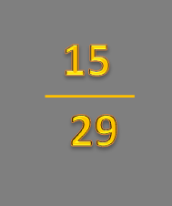

|
700 a 800 mil pessoas |
| MORREM POR SUICÍDIO NO MUNDO A CADA ANO; |
|  |
15 a 29 anos |
| é a faixa etária na qual o suicídio foi a quarta causa de morte mais frequente, depois de acidentes de trânsito, tuberculose e violência; |
|
12,6 a cada 100 mil homens |
morrem por suicídio. Em comparação com as mulheres, são 5,4 por cada 100mil;
-As taxas de suicídio entre homens são geralmente mais altas em países de alta renda (16,5 por 100mil).Para mulheres de baixa-média renda (7,1 por 100mil);
|
|
79% dos suicídios no mundo |
ocorrem em países de baixa e média renda;
-As taxas de suicídio caíram 36% nos 20 anos entre 2000 e 2019, variando de 17% ma região do Mediterrânio Oriental a 47% na região europeia e 49% no pacífico Ocidental.
Nas Américas, as taxas aumentaram 17% no mesmo período. |